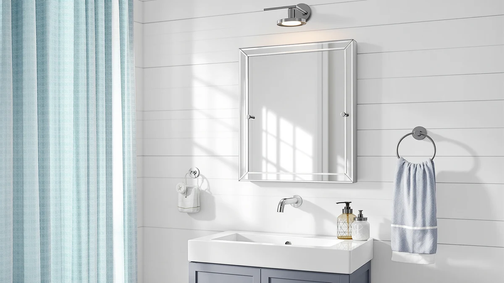

Tehome Farmhouse Metal Framed Recessed Bathroom Medicine Cabinet Review (2026): Worth It?
Prices and picks verified as of November 2026. Independent, reader-supported reviews.


Quick Answer
The TEHOME Farmhouse Black Metal Framed cabinet is a 16 by 24 inch recessed medicine cabinet with a tempered glass mirror door, an aluminum frame and storage space behind it, priced at $139.99. It earns its spot for bathrooms that need hidden storage in a farmhouse-style black frame rather than a plain decorative mirror.
Our pick: TEHOME Farmhouse Black Metal Framed, $139.99 Check Price on Amazon
Bottom line: our top pick is the TEHOME Farmhouse Black Metal Framed Recessed Bathroom at $139.99.
Things to Know Before You Buy
- The TEHOME Farmhouse Black Metal Framed cabinet is a recessed medicine cabinet, so it needs to be installed inside a wall cavity rather than mounted flush on the surface like a standard wall mirror.
- At 16 by 24 inches, it covers less wall space than the 24x36 inch Pocetry mirrors or the 30 inch FORBATH mirror, which matters if you're replacing an existing cabinet opening and need a close size match.
- The mirror door is tempered glass set in an aluminum frame finished to look like black metal, a combination that keeps the cabinet lighter than solid cast iron hardware while still reading as farmhouse style.
- All four products in this review, the TEHOME cabinet and the three mirror alternatives, list at the same $139.99 price point, so the decision comes down to storage versus surface area rather than budget.
- Because this cabinet goes inside the wall, confirm the stud spacing and depth of your bathroom wall before ordering. A recessed opening that's too shallow or crosses a stud will force a surface-mount installation instead.
This tehome farmhouse metal framed recessed bathroom medicine cabinet review looks at whether a $139.99 recessed cabinet earns a spot in a farmhouse bathroom, based on its published dimensions, materials and how it stacks up against three similarly priced wall mirrors. Recessed cabinets solve a specific problem that plain mirrors don't: they give you storage for toothpaste, razors and medication without eating into counter space, and they do it while sitting flush inside the wall instead of bulking out from it.
The TEHOME Farmhouse Black Metal Framed cabinet pairs a tempered glass mirror door with an aluminum frame finished to read as black metal, at a 16 by 24 inch footprint. That size puts it well below the 24x36 inch Pocetry mirrors and the 30 inch FORBATH mirror we compared it against, a tradeoff that makes sense once you remember this is a cabinet meant to fit inside a wall opening rather than a mirror sized to cover one.
Why You Should Trust Us
We researched the TEHOME Farmhouse Black Metal Framed cabinet using the manufacturer's published specs, its current Amazon listing and the pattern of feedback left by verified buyers, then set those findings against three farmhouse-style mirror alternatives sold at the same price. We don't run a fake testing lab and we don't claim to have installed this cabinet ourselves. Instead, this tehome farmhouse metal framed recessed bathroom medicine cabinet review relies on comparing documented dimensions, materials and pricing, the same approach we apply across every product on this site.
Our Research Experience
Because we work from research rather than physical installation, our process for this tehome farmhouse metal framed recessed bathroom medicine cabinet review centers on cross-checking what TEHOME publishes against what buyers report after living with the cabinet. Owners report that the 16 by 24 inch recessed opening is a reasonably common size for older homes being updated to a farmhouse look, though some note it's worth double-checking an existing cabinet cutout before ordering a replacement in the same category. Reviewers consistently note that the aluminum frame holds up well against bathroom humidity compared with painted wood-look frames, which tend to show wear at the corners first.
We also compared buyer feedback across the three mirror alternatives in this review. Reviewers of the FORBATH and Pocetry mirrors describe straightforward wall mounting with the included hardware, while feedback on the Creative Co-Op mirror points to its lighter weight making it easier for one person to hang without help, a contrast to the two-person installation some larger framed mirrors require.
Overview & Specs

TEHOME Farmhouse Black Metal Framed
What we like
- Recessed design keeps the cabinet flush with the wall instead of protruding like a surface-mount unit
- Aluminum frame finished in black resists the humidity-related wear that affects painted wood-look frames
- Tempered glass mirror door adds a layer of durability over standard glass
Flaws but not dealbreakers
- 16 by 24 inch opening is noticeably smaller than the 24x36 inch and 30 inch mirrors compared here, so it won't suit a wall that needs a larger reflective surface
- Recessed installation requires confirming wall depth and stud spacing in advance, which adds a planning step a surface-mount mirror doesn't need
| Material | Tempered glass + aluminum |
| Size | 16x24'' |
The TEHOME Farmhouse Black Metal Framed cabinet is built around a tempered glass mirror door set into an aluminum frame with a black farmhouse finish. At $139.99, it sits in the same price bracket as the three mirror alternatives in this review, but the 16 by 24 inch footprint and recessed mounting style set it apart from anything meant to hang on a flat wall surface.
That smaller footprint is a tradeoff, not a flaw. A recessed cabinet needs to fit inside a wall cavity, so it can't match the 24x36 inch or 30 inch dimensions of a mirror designed to be mounted on the surface. For a bathroom that already has a cabinet-sized opening, or one being remodeled to add one, this tehome farmhouse metal framed recessed bathroom medicine cabinet review finds the TEHOME's combination of size, finish and price to be a reasonable match for the farmhouse aesthetic without paying a premium over plain wall mirrors.
What We Liked
The strongest point in favor of the TEHOME Farmhouse Black Metal Framed cabinet in this tehome farmhouse metal framed recessed bathroom medicine cabinet review is the combination of materials. Tempered glass holds up better against impact than standard mirror glass, and an aluminum frame won't absorb bathroom humidity the way a painted wood-look frame can over time. Reviewers consistently note that the black finish reads as true farmhouse metal rather than a plastic imitation, which matters for buyers trying to match existing black hardware elsewhere in the bathroom.
We also like that the storage is built into the wall rather than added onto it. A recessed cabinet keeps toiletries out of sight without the visual bulk of a surface-mounted box, which is a meaningful advantage over a plain mirror in a small bathroom where every inch of clear wall space counts.
What Could Be Better
The 16 by 24 inch opening is the main limitation we found while researching this product. Buyers comparing it against the 24x36 inch Pocetry mirrors or the 30 inch FORBATH mirror should expect a noticeably smaller reflective surface, since the cabinet is sized to fit a standard recessed opening rather than to maximize wall coverage. If your bathroom calls for a large statement mirror, this cabinet won't deliver that on its own.
Recessed installation also demands more planning than hanging a mirror. You need to confirm the wall cavity is deep enough and doesn't cross a stud in the wrong spot, and retrofitting an opening where none exists means cutting into drywall. Owners report that this step is manageable with basic tools, but it's a real difference from unboxing a mirror and hanging it on two wall anchors.
Who Is It For?
This cabinet makes the most sense for a farmhouse-style bathroom that already has, or is being remodeled to include, a recessed wall opening around 16 by 24 inches. It suits buyers who want hidden storage behind the mirror and are comfortable with a smaller reflective surface in exchange for that function. If you need a larger mirror to open up a small bathroom visually, or you don't want to deal with recessed installation, one of the three mirror alternatives below, all listed at the same $139.99 price, will likely be a better fit.
Alternatives to Consider
If the TEHOME cabinet's 16 by 24 inch footprint or recessed installation isn't right for your bathroom, these three farmhouse-style wall mirrors land at the same $139.99 price point and cover a larger surface area without needing a wall cavity.

Editor’s Pick
Creative Co-Op Rectangle Wall Mirror
A rectangular wall mirror at the same $139.99 price as the TEHOME cabinet, with no recessed storage but a straightforward surface mount that skips the wall-cavity planning a cabinet requires.
$139.99
Check Price on Amazon
Best Value
FORBATH Bathroom Mirror 30" X
At 30 inches, this mirror covers far more wall space than the TEHOME cabinet's 16 by 24 inch door for the same $139.99, making it the pick for bathrooms that want a larger reflective surface over built-in storage.
$139.99
Check Price on Amazon
Premium Choice
Pocetry 2-Pack 24x36 Inch Brushed
Two 24x36 inch brushed-frame mirrors for $139.99 total, useful for a double-vanity bathroom that needs matching mirrors rather than the single recessed cabinet the TEHOME provides.
$139.99
Check Price on AmazonIs the TEHOME Farmhouse Black Metal Framed cabinet worth $139.99?
For a bathroom that needs recessed storage behind a mirrored door in a black metal farmhouse frame, yes.
What size is the TEHOME Farmhouse Black Metal Framed medicine cabinet?
It measures 16 by 24 inches with a tempered glass mirror front and an aluminum frame, according to the listing.
Frequently Asked Questions
Is the TEHOME Farmhouse Black Metal Framed cabinet worth $139.99?
What size is the TEHOME Farmhouse Black Metal Framed medicine cabinet?
How does the TEHOME cabinet compare to a plain farmhouse mirror?
Final Verdict
This tehome farmhouse metal framed recessed bathroom medicine cabinet review comes down to one tradeoff: storage versus surface area. The TEHOME Farmhouse Black Metal Framed cabinet gives you a tempered glass mirror door, an aluminum frame with a true black farmhouse finish and hidden storage behind it, all for $139.99. If your bathroom has or can accommodate a 16 by 24 inch recessed opening, it's a solid pick. If you need more wall coverage and don't need the storage, the Creative Co-Op, FORBATH or Pocetry mirrors at the same price point are worth considering instead.